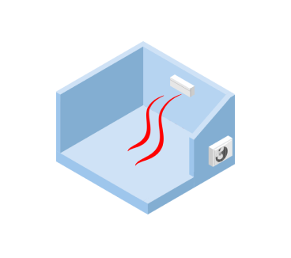
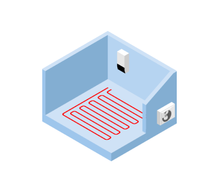
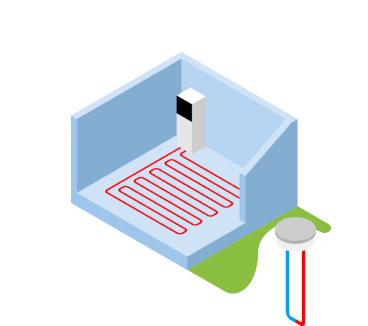
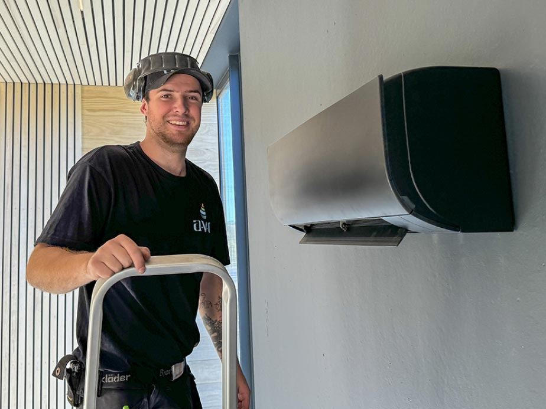
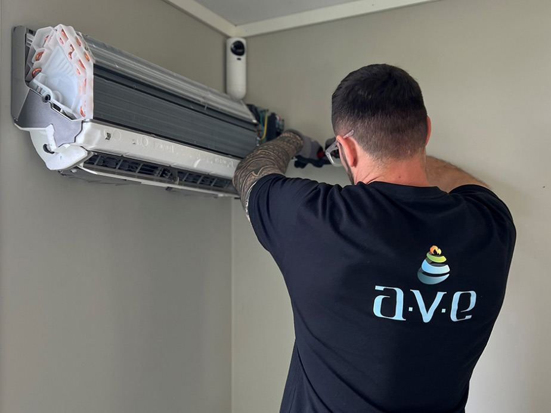

Varmepumper i Rogaland
Vi får deg inn i varmen.
Din lokale leverandør av varmepumper i Rogaland. Vi leverer luft/luft, luft/vann og væske/vann, og utfører service på alle merker og leverandører.
Våre varmepumper
Tre måter å varme opp boligen
Hvilken type som passer best avhenger av boligen, oppvarmingssystemet du har i dag og hvor mye du vil investere.

Luft/luft
Trekker varmeenergi fra uteluften og leverer lun og behagelig varme til boligen din.
Les mer
Luft/vann
Trekker varmeenergi fra uteluften og leverer vannbåren varme til boligen din.
Les mer
Væske/vann
Bruker varme fra en energibrønn i bakken og leverer vannbåren varme til boligen.
Les mer
Service
Service hvert andre år
Vi anbefaler service hvert andre år. Da går varmepumpen lettere og reduserer strømkostnadene dine. Vi utfører service på alle varmepumper, uansett merke og leverandør.
- Service på alle merker og leverandører.
- Anbefalt intervall: hvert andre år.
- Vi tar service på pumpe du har kjøpt et annet sted.
Hvorfor AVE
Kvalitet til en fornuftig pris
Hos oss får du kvalitetsleveranser til en fornuftig pris og uten overraskelser. Befaring er alltid gratis.
Vi kommer hjem til deg og ser på forholdene før du bestemmer deg.
Vi hjelper deg å velge varmepumpe til dine behov – ikke den dyreste.
Velger du videobefaring, får du ekstra rabatt.
Sender du oss bilder, får du også ekstra rabatt.

Proffkunder
Kjøl og varme for borettslag og næring
Vi leverer kjøle- og oppvarmingsløsninger for borettslag og til kommersielt bruk. Daikin er en betydelig aktør innen kjøleteknikk og kjøl/frys, og vi er stolt forhandler.
Klar for en varmere bolig?
Bestill en gratis befaring, så gir vi deg et tilbud uten overraskelser.